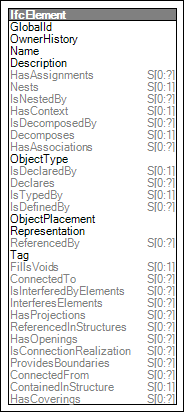

Link to this page
Link to this pageElements may be connected to other elements, where the RelatingElement is of equal or higher priority, is generally constructed first, and/or anchors the RelatedElement.
Figure 50 illustrates an instance diagram.
 |
Figure 50 — Element Connectivity |